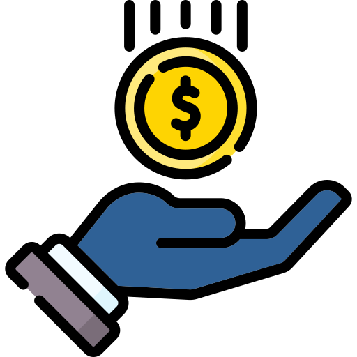

Murakaza Neza
Agaciro Saving Group

About This Project
Agaciro Saving Group Management System is a comprehensive web-based solution designed to help savings groups manage their financial transactions efficiently. This system provides a robust platform for tracking deposits, withdrawals, and member information.
Key Features
- Member Management
- Transaction Tracking (Deposits & Withdrawals)
- Automatic Fee Calculation
- Transaction History
- Balance Reporting
- Individual Member Reports
Note: This is a demo landing page. The full application requires PHP and MySQL server setup to function. Please visit the GitHub repository for the complete source code and setup instructions.